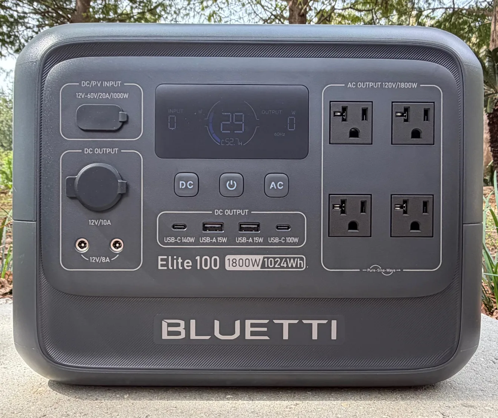

Buying Guide
BLUETTI Power Stations for Projectors
A portable power station turns any wall, fence, or backyard into a theater, with no extension cord and no hunting for an outlet. For projector owners there is really one question that matters: how long will it run my projector? This guide is built around that question, using the real power draws I have measured across the projectors I test, from 65 watt portables up to commercial units that pull over 1,000 watts. Most home projectors land between 100 and 300 watts.
Start with your projector's watts
- The runtime math: take the station's watt hours, multiply by about 0.85 for inverter losses, and divide by your projector's watts. A 1,024Wh station running a 200 watt projector gives you roughly four and a half hours.
- The movie test: a station only counts if it runs your projector at full brightness for a whole movie, two to three hours, on the battery alone. Eco modes stretch runtime, but shop by the full-power number.
- Add the extras: a streaming stick is a few watts, but powered speakers or a soundbar add up. Size the station for everything plugged into it, not just the projector.
Where BLUETTI shines
- LiFePO4 batteries: the current line uses lithium iron phosphate cells, rated for thousands of charge cycles, so the station survives years of movie nights.
- Quiet power: no engine, no fumes, no noise over your movie. For a backyard setup there is no contest against a gas generator.
- Fast recharging: quick AC charging means the station is ready again the same day, not tomorrow.
- Double duty: between movie nights the same station is home backup for outages, and the bigger models can expand with extra battery packs.
What to check before buying
- Capacity (Wh) against your projector: run the math above with your projector's full-load watts, not its eco rating.
- Continuous output (W): the station's output rating must clear your total load, projector plus audio, with headroom to spare.
- Weight: if the station travels to the backyard or a friend's house, every pound matters. If it lives in the theater room, buy capacity instead.
- Recharge speed and solar: fast AC charging for weekly use; solar input is a bonus for camping and tailgate setups.
Brandon's BLUETTI picks
The BLUETTI stations I recommend for projector use, sized by the jobs above. "BLUETTI Direct" goes to the official store; Amazon and eBay are for comparing prices. Buying direct? Use code Projectors5 for 5% off sitewide (excludes accessories and flash sale items).
Disclosure: As an Amazon Associate, I earn from qualifying purchases. I also earn affiliate commissions on qualifying purchases made through links to AV Access, AliExpress, B&H Photo Video, BenQ, BLUETTI, eBay, JMGO, Nothing Projector, UGREEN, and XGIMI. Links open in a new tab.
BLUETTI Elite 30 mini
Budget runtime for portable projectors, 288Wh
The lowest price way to give a portable projector a real battery. Small portables like the XGIMI MoGo 2 Pro and the XGIMI Elfin Flip pull only 65 watts and have no battery of their own, so this 288Wh station runs either one for roughly three and a half to four hours at full brightness, a full movie away from an outlet, for $249.99. Its 300W output is sized for those low draw projectors and smaller gear, so if your projector pulls more than that, step up to the Elite 100 V2 below. It is a pre-order right now and ships from early November.
BLUETTI Elite 100 V2
The projector sweet spot, 1,024Wh
The station I am reviewing now, and the size most projector owners should start with. Its 1,024Wh runs a typical 100 to 300 watt home projector for roughly three to eight hours, a full movie with room to spare, and its 1,800W output covers the projector, a streaming stick, and audio at the same time. Big enough to matter, small enough to carry to the backyard.
BLUETTI Elite 200 V2
Double the runtime, 2,073.6Wh
Twice the capacity of the Elite 100 V2 and 2,600W of output. This is the pick for bright lamp projectors that pull real power, long game days, and setups where the projector, sound, and lights all run off the station. Expect roughly six to sixteen hours for most home projectors.
BLUETTI Apex 300
Big setups and home backup, 2,764.8Wh
The heavy lifter: 2,764.8Wh and 3,840W of output, expandable with extra batteries. It runs power-hungry projector setups for the long haul and doubles as home backup, so an outage does not end movie night, or the golf sim session. This is the one for dedicated rooms and whole-evening outdoor events.
Not sure which size your projector needs? Book a consultation and we will run the runtime numbers for your exact setup before you spend a dime.